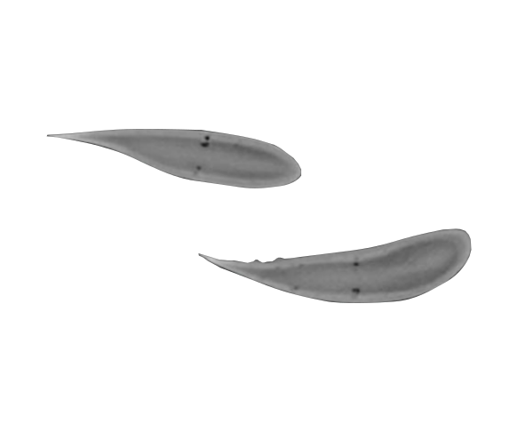

D. Floryan and C. W. Rowley, under review
arXiv: 1909.05133
The image shows the cross sections of dolphin flukes, captured by CT scans (Fish and Lauder, ARFM 2006); it beautifully shows how the material composition and thickness vary along the length, both of which determine the mechanical stiffness. We use theory to discover how such inhomogeneity affects swimming performance. We also calculate optimal distributions of stiffness, with the results reflective of what is observed in nature.
We study a linear inviscid model of a passively flexible swimmer with distributed flexibility, calculating its propulsive performance and optimal distributions of flexibility. The frequencies of actuation and mean stiffness ratios we consider span a large range, while the mass ratio is fixed to a low value representative of swimmers. We present results showing how the trailing edge deflection, thrust coefficient, power coefficient, and efficiency vary with frequency, mean stiffness, and stiffness distribution. Swimmers with distributed flexibility have the same qualitative features as those with uniform flexibility. Significant gains in thrust can be made, however, by tuning the stiffness such that a resonant response is triggered, or by concentrating stiffness towards the leading edge if resonance cannot be triggered. To minimize power, the opposite is true. Meaningful gains in efficiency can be made at low frequencies by concentrating stiffness away from the leading edge, since doing so induces efficient travelling wave kinematics. We also consider the effects of a finite Reynolds number in the form of streamwise drag. The drag adds an offset to the net thrust produced by the swimmer, causing efficiency-maximizing distributions of flexibility to tend towards thrust-maximizing ones, representative of what is found in nature.